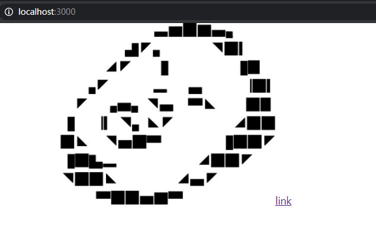
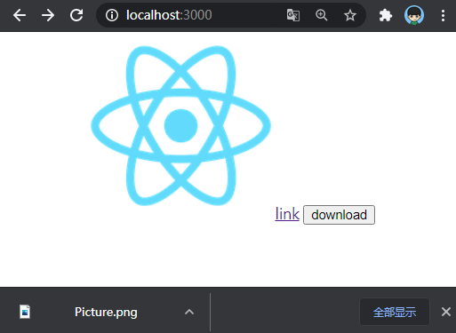

最近看到项目里有个模块叫download，用node编写，用作中间件，改变HTTP Response的Header以下载文件，于是打算在本文对H5种媒体的展示或下载方式做一个简单的归纳。
首先npx create_react_app media-demo创建一个测试媒体类型展示的React Demo，我们打算在Download.jsx种实现一个简单的图片展示和下载模块。首先上代码：import React from 'react';
const url = "https://img.moegirl.org.cn/common/f/ff/YJSNPI_Ascii_Art..png"
function Download() {
return (
<div>
<img src={url} />
<a href={url}>link</a>
</div>
);
}
export default Download;
no-referrer
这个模块会被直接挂载到App.js上，按道理会展示一张地址为https://img.moegirl.org.cn/common/f/ff/YJSNPI_Ascii_Art..png的图片。下方带有一个连接。打开浏览器，却看到图片未能加载，连接也无法正常跳转到图片，于是打开控制台一看究竟，发现图片的请求报403错误。是连接出错了吗？事实上不是：直接复制连接地址到浏览器种发现是可以正常打开的。
HTTP请求体的header中有一个referrer字段，用来表示发起HTTP请求的源地址信息，这个referrer信息是可以省略但是不可修改的。你能设置是否带上这个referrer信息，单不能定制referrer的值。
服务器端在拿到这个referrer值后就可以进行相关的处理，比如图片资源，可以通过referrer值判断请求是否来自本站，若不是则返回403或者重定向返回其他信息，从而实现图片的防盗链。上面出现403就是因为，请求的是别人服务器上的资源，但把自己的referrer信息带过去了，被对方服务器拦截返回了403。
在前端可以通过meta来设置referrer policy(来源策略)。所以针对上面的403情况的解决方法，就是把referrer设置成no-referrer，这样发送请求不会带上referrer信息，对方服务器也就无法拦截了。<meta name="referrer" content="no-referrer" />
隐藏referrer信息后，张口闭眼成功展示！

浏览器中referrer默认的值是no-referrer-when-downgrade，就是除了降级请求的情况以外都会带上referrer信息。降级请求是指HTTPS协议的地址去请求HTTP协议，所以上面403的情况还有另一种解决方法就是，请求的图片地址换成HTTP协议，自己的地址使用HTTP协议，这样降级请求也不会带上referrer。
配置Nginx防盗链
location ~* \.(gif|jpg|png|jpeg)$ { |
首先第一句以文件格式后缀匹配出图片资源路径，然后通过valid_referers添加合法的referer地址，加上none，表示没有传referer也是合法的，最后referer不合法的情况返回403。如果想跳其他地址或返回其他图片资源可以这样：rewrite xxx.xxx.com/xxx.jpg。
HTTP头部中还有一个与referrer类似的叫orgin的字段，在发送跨域请求或预检请求(preflight request)时会带上这个参数，他用来表示发起请求的服务器地址，这个参数是必定会传的，然后服务器端用此字段来判断是否允许跨域。
下载资源
我们除了展示图片，还要实现一个点击按钮下载的需求。于是Download.jsx加上一个button，点击时候触发下载。假定在download()实现下载事件。import React from 'react';
const url = "https://img.moegirl.org.cn/common/f/ff/YJSNPI_Ascii_Art..png"
const download = (url)=>{
//TOTO
}
function Download() {
return (
<div>
<img src={url} />
<a href={url}>link</a>
<button onClick={()=>download(url)}>download</button>
</div>
);
}
export default Download;
window.open
用windows.open(url)在可以下载docx，exe等浏览器无法展示的文件，单对于图片和mp4，mp3会直接在新页面打开。
不出所料，直接在新页面打开了图片，没有触发下载。
创建虚拟DOM a
网上常见的JS控制下载的方法就是创建一个虚拟的a类型的DOM，然后将点击事件分发给它，根据它的download属性下载const download=(url) => {
const aLink = document.createElement('a')
aLink.download = 'Picture.png'
aLink.href = url
aLink.dispatchEvent(new MouseEvent('click', {}))
}
但是经过测试并没有达到预期的下载效果，而是直接在页面打开了图片。这是因为图片地址和前端不同源，针对跨域的图片，不能用这种方式下载。作为对照，用React在public目录下的logo192.png图片做测试：const url = "/logo192.png"
发现同源图片是可以通过该种方式正常下载的，且下载的文件名和download属性的值保持一致：

canvas.toDataURL
通过url转base64，利用canvas.toDataURL的API转化成base6const download = (url) => {
return new Promise ((resolve,reject) => {
let image = new Image();
image.onload = function() {
let canvas = document.createElement('canvas');
canvas.width = this.naturalWidth;
canvas.height = this.naturalHeight;
// 将图片插入画布并开始绘制
canvas.getContext('2d').drawImage(image, 0, 0);
// result
let result = canvas.toDataURL('image/png')
resolve(result);
};
// CORS 策略，会存在跨域问题https://stackoverflow.com/questions/20424279/canvas-todataurl-securityerror
image.setAttribute("crossOrigin",'Anonymous');
image.src = url;
// 图片加载失败的错误处理
image.onerror = () => {
reject(new Error('图片流异常'));
};
}
这种方式经过测试，同样会存在跨域问题，虽然已经设置了允许跨域，但是浏览器对此却是拒绝的。如果图片链接是跨域的，浏览器会禁用download，只允许打开图片而不允许下载。
Content-disposition
前端拿到图片的流信息后，需要做进一步转化处理，将流信息转化成一个本地的下载地址，这对前端是一种性能上的消耗，其实这一过程是多余的。HTTP协议响应头Content-disposition可以控制用户请求所得的内容存为一个文件的时候提供一个默认的文件名，文件直接在浏览器上显示或者在访问时弹出文件下载对话框。在中间层开个通用的下载接口，可以支持任意类型的文件下载。router.get('/common/download', (req, res, next) => {
const url = req.query.url
const fileName = req.query.fileName
request.get({ url, encoding: null }, (error, response, body) => {
if (error) {
next(error)
return
}
const fileType = response.headers['content-type'].split('/')[1]
res.setHeader('Content-disposition', getContentDisposition(fileName, fileType))
res.setHeader('Content-type', response.headers['content-type'])
res.send(body)
})
})
function getContentDisposition(fileName, fileType) {
return `attachment; filename=${encodeURIComponent(fileName)}.${fileType}; filename*=utf-8''${encodeURIComponent(fileName)}.${fileType};`
}
application/octet-stream
一般文件服务器相应文件请求的时候，都会在Content-Type种说明文件类型，浏览器也就基于此判断执行的方式是打开开始下载。如果是application/octet-stream类型的，则浏览器会判定位这是个不支持的二进制类型数据，所以会触发下载。于是可以在文件服务器上修改Content-Type: application/octet-stream来欺骗浏览器。location /download/ {
alias /;
add_header Content-Type application/octet-stream;
allow all;
autoindex on;
}
注意：Content-disposition的设置需要注意兼容firefox以及IE浏览器
参考文献：